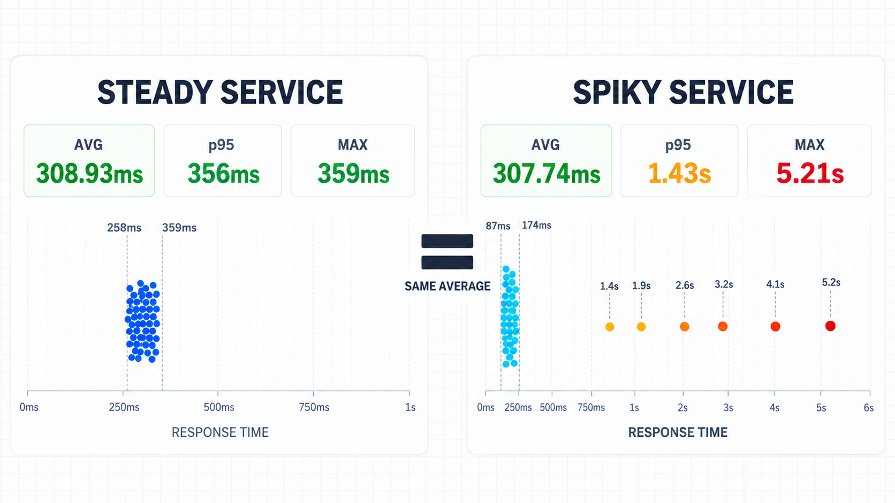
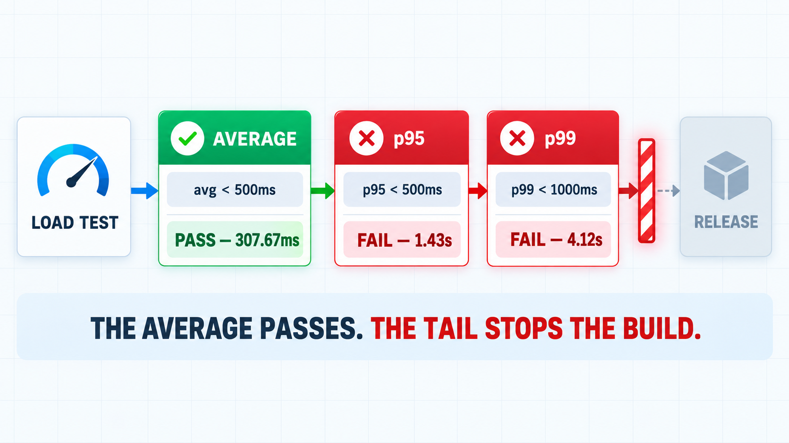
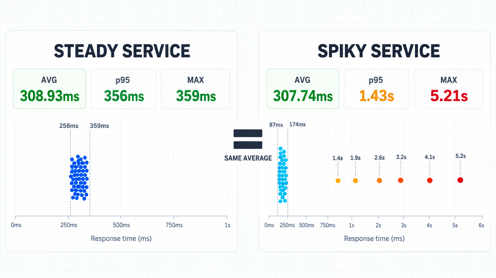

"Average response time: 308ms" is the kind of line that ends a performance conversation. It sounds precise, it's under the target, everyone moves on. The trouble is that an average answers a question nobody using your service is asking. No user experiences the average. Each one experiences a single request, and some of those requests are a lot worse than the number on the dashboard.
What the average actually tells you
The average is the total time spent across all requests, divided by the number of requests. That makes it a decent number for capacity maths, such as how much work the system did in total, and a poor one for describing what a request feels like.
Response times aren't symmetrical. They have a hard floor (a request can't take less than zero) and no ceiling. Most requests cluster near the fast end, and a handful trail off into garbage collection pauses, cold caches, lock contention, connection pool waits and retries. That long right-hand tail is where the pain is, and the average blends it into the fast majority until it disappears.
Percentiles describe the shape instead of flattening it. Sort every response time from fastest to slowest:
- p50 (the median) is the middle value. Half of requests were faster, half slower.
- p95 is the value 95% of requests came in under. One request in twenty was slower than this.
- p99 is the value 99% came in under. One request in a hundred was slower.
So p95 and p99 are direct statements about your slowest users, which is exactly the group the average is built to dilute.
100 responses, two very different services
To make this concrete I pointed k6 at a small local server with two endpoints, each with scripted delays, and sent 100 requests to each. Everything below is the real output from those runs, not numbers typed in by hand.
The first endpoint is steady. Here are all 100 response times in milliseconds, sorted:
258 263 263 264 264 264 264 264 265 265
265 265 269 275 276 277 278 278 279 279
280 281 281 281 281 281 281 281 282 282
282 283 293 294 295 295 296 296 296 296
297 297 297 298 300 307 307 308 309 309
309 309 310 311 311 312 312 312 313 313
323 324 325 325 325 325 326 326 326 327
327 339 339 340 340 340 341 341 341 342
342 342 342 343 343 344 344 344 344 346
353 353 355 355 356 357 358 358 359 359
Nothing dramatic. The fastest and slowest requests are about 100ms apart. This is what k6 prints for it:
/\ Grafana /‾‾/
/\ / \ |\ __ / /
/ \/ \ | |/ / / ‾‾\
/ \ | ( | (‾) |
/ __________ \ |_|\_\ \_____/
execution: local
script: checkout.js
output: -
scenarios: (100.00%) 1 scenario, 5 max VUs, 10m30s max duration (incl. graceful stop):
* default: 100 iterations shared among 5 VUs (maxDuration: 10m0s, gracefulStop: 30s)
█ TOTAL RESULTS
checks_total.......: 100 15.894166/s
checks_succeeded...: 100.00% 100 out of 100
checks_failed......: 0.00% 0 out of 100
✓ status is 200
HTTP
http_req_duration..............: avg=308.93ms min=257.84ms med=308.95ms max=359.25ms p(90)=346.8ms p(95)=356.39ms
{ expected_response:true }...: avg=308.93ms min=257.84ms med=308.95ms max=359.25ms p(90)=346.8ms p(95)=356.39ms
http_req_failed................: 0.00% 0 out of 100
http_reqs......................: 100 15.894166/s
EXECUTION
iteration_duration.............: avg=309.7ms min=258.02ms med=309.36ms max=359.25ms p(90)=346.81ms p(95)=356.39ms
iterations.....................: 100 15.894166/s
vus............................: 5 min=5 max=5
vus_max........................: 5 min=5 max=5
NETWORK
data_received..................: 18 kB 2.8 kB/s
data_sent......................: 7.6 kB 1.2 kB/s
running (00m06.3s), 0/5 VUs, 100 complete and 0 interrupted iterations
default ✓ [ 100% ] 5 VUs 00m06.3s/10m0s 100/100 shared iters
Average 308.93ms, median 308.95ms, p95 356ms. When the average and the median agree and p95 sits close to both, the average is a fair summary.
Now the second endpoint. Same test, same 100 requests, sorted:
87 92 92 92 92 93 94 94 94 95
101 103 107 108 108 109 109 109 109 109
109 109 110 110 110 110 113 116 121 122
122 122 122 123 123 123 124 124 125 125
125 125 125 126 126 127 132 137 138 138
138 138 139 139 139 139 139 139 140 140
140 140 140 141 141 141 142 142 146 148
149 154 154 154 154 155 155 155 155 155
156 156 156 157 157 166 166 170 170 170
170 171 171 174 1414 1904 2608 3202 4107 5216
Read the last row. Ninety-four requests finish in under 175ms, and then six of them take between 1.4 and 5.2 seconds. And the k6 summary, trimmed to the HTTP section:
HTTP
http_req_duration..............: avg=307.74ms min=86.91ms med=138.18ms max=5.21s p(90)=170.43ms p(95)=1.43s
{ expected_response:true }...: avg=307.74ms min=86.91ms med=138.18ms max=5.21s p(90)=170.43ms p(95)=1.43s
http_req_failed................: 0.00% 0 out of 100
http_reqs......................: 100 13.486674/s
Average: 307.74ms. The steady service came in at 308.93ms. If the average is the only number on the report, these two services are the same, and the second one is even a millisecond better.

Where the outliers went
Put the two runs side by side:
- Average: 308.93ms steady, 307.74ms spiky. Identical for any practical purpose.
- Median: 308.95ms steady, 138.18ms spiky. The spiky service looks more than twice as fast.
- p(90): 346.8ms steady, 170.43ms spiky. Still looks faster.
- p(95): 356.39ms steady, 1.43s spiky.
- Max: 359.25ms steady, 5.21s spiky.
The six slow requests didn't vanish from the average, they got spread across the other ninety-four until they stopped looking like anything. A few things fall out of the arithmetic:
- The average describes a request that never happened. In the spiky run, no request took anywhere near 308ms. Ninety-four were well under 175ms and six were over 1.4 seconds. The average landed in the empty gap between them.
- 94 of the 100 requests were faster than the average. A number that 94% of your data beats isn't a typical value, it's the footprint of the tail.
- Six requests account for 60% of the total time. Those six add up to about 18.4 seconds out of 30.8 seconds for the whole run. Take them out and the other ninety-four average 131ms.
- The fast majority can cover for a growing tail. If the fast requests get a little faster while the slow ones get much slower, the average barely moves, or even improves. The report goes green while the experience for the unlucky users gets worse.
Notice also that p(90) missed it. With six slow requests in a hundred, the 90th percentile still lands among the fast ones. That's the practical reason to look at p95 and p99 rather than stopping at the median or p90: the further into the tail the problem sits, the further out you have to look to see it.
Why "only 6%" isn't small
It's tempting to shrug at six requests in a hundred. Two reasons not to.
First, users don't make one request. A page load or a checkout is usually several calls. If each call has a 6% chance of landing in the slow tail, a flow that makes 10 calls has a 46% chance of hitting at least one of them. At 20 calls it's about 71%. A tail that touches 6% of requests can touch most of your sessions.
Second, the tail isn't random noise. Slow requests tend to be the heavy ones: the biggest basket, the account with the longest history, the report over the widest date range. Those often belong to the customers you'd least like to keep waiting.
Which tools report percentiles by default
Most load testing tools already agree with all of this, which you can tell from what they print without being asked:
- k6 prints
avg,min,med,max,p(90)andp(95)for every trend metric.p(99)isn't in the default set; you add it withsummaryTrendStatsin the script options or--summary-trend-statson the command line. - Gatling reports the 50th, 75th, 95th and 99th percentiles in its console summary and HTML report, alongside min, max, mean and standard deviation.
- JMeter depends on the listener. The Aggregate Report gives Average, Median, 90% Line, 95% Line and 99% Line, and the HTML dashboard shows the same three percentiles. The Summary Report gives only average, min, max and standard deviation, so the listener you pick decides whether you see the tail at all.
- Locust shows Median, 95%ile and 99%ile next to Average, Min and Max in its web UI, and prints a full percentile table from 50% to 100% at the end of a headless run.
So in these tools the percentiles are already on the screen. The problem is rarely that the tool hid them. It's that the average is the number that gets copied into the ticket, the slide and the release sign-off.
Put the percentiles in the threshold, not just the report
A number in a summary only helps if someone reads it. A number in a threshold fails the build. Here's the same k6 script with p(99) added to the summary and three thresholds on http_req_duration: one on the average, one on p95 and one on p99.
export const options = {
vus: 5,
iterations: 100,
summaryTrendStats: ['avg', 'min', 'med', 'max', 'p(90)', 'p(95)', 'p(99)'],
thresholds: {
http_req_duration: ['avg<500', 'p(95)<500', 'p(99)<1000'],
},
};
Run against the spiky endpoint, trimmed again to the relevant parts:
█ THRESHOLDS
http_req_duration
✓ 'avg<500' avg=307.67ms
✗ 'p(95)<500' p(95)=1.43s
✗ 'p(99)<1000' p(99)=4.12s
█ TOTAL RESULTS
checks_total.......: 100 13.480589/s
checks_succeeded...: 100.00% 100 out of 100
checks_failed......: 0.00% 0 out of 100
✓ status is 200
HTTP
http_req_duration..............: avg=307.67ms min=91.34ms med=138.33ms max=5.21s p(90)=170.34ms p(95)=1.43s p(99)=4.12s
{ expected_response:true }...: avg=307.67ms min=91.34ms med=138.33ms max=5.21s p(90)=170.34ms p(95)=1.43s p(99)=4.12s
http_req_failed................: 0.00% 0 out of 100
http_reqs......................: 100 13.480589/s
running (00m07.4s), 0/5 VUs, 100 complete and 0 interrupted iterations
default ✓ [ 100% ] 5 VUs 00m07.4s/10m0s 100/100 shared iters
ERRO[0007] thresholds on metrics 'http_req_duration' have been crossed
The average threshold passes with nearly 200ms to spare. The p95 threshold fails by almost a full second and p99 by more than three. k6 exits with code 99, the pipeline stage goes red, and the six slow requests are finally somebody's problem. A team gating only on avg<500 would have shipped this.

A few honest caveats
- p99 needs enough samples. With 100 requests, p99 is decided by the slowest one or two, so one unlucky request moves it a long way. That's fine for an illustration and not fine for a release gate. For a p99 you intend to trust, you want thousands of requests behind it.
- Don't average percentiles. The mean of five p95s from five instances or five time windows isn't the p95 of anything. Percentiles have to be recalculated from the underlying data or from histograms.
- Max isn't a substitute. It's a single request, it's different on every run, and one network blip sets it. p99 is a far more stable description of the tail than the single worst case.
- The average still has a job. Total time, throughput and capacity estimates are all legitimately average-shaped questions. It's a useful input, just not a description of user experience.
- Check the percentile is doing what you think. Tools interpolate slightly differently, so a p95 from k6 and a p95 from another tool over the same data can differ by a little. Compare like with like.
Wrapping up
Two services, the same 308ms average. One answers every request in about a third of a second. The other is quicker for most people and makes six in every hundred wait up to five seconds. The average can't tell them apart, and p95 separates them in one line.

Report the median so you know what typical looks like, report p95 and p99 so you know what the unlucky requests look like, and set your thresholds on the percentiles. The average can stay in the summary, as long as it isn't the number anyone signs off on.